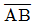
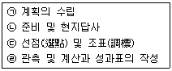
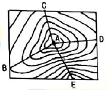

지적산업기사 (2018-08-19 기출문제)
1과목: 지적측량
1. 평판측량방법에 따른 세부측량을 시행하는 경우의 기준으로 옳지 않은 것은?
- 지적도를 갖춰 두는 지역의 거리측정단위는 10cm로 한다.
- 임야도를 갖춰 두는 지역의 거리측정단위는 50cm로 한다.
- 경계점은 기지점을 기준으로 하여 지상경계선과 도상경계선의 부합여부를 현형법 등으로 확인한다.
- 세부측량의 기준이 되는 기지점이 부족한 경우에는 측량상 필요한 위치에 보조점을 설치할 수 있다.
(정답률: 71%)

2. 다각망도선법에 따른 지적삼각보조점측량의 관측 및 계산에 대한 설명으로 옳지 않은 것은?
- 1도선의 거리는 4km이하로 한다.
- 3점 이상의 교점을 포함한 결함다각방식에 따른다.
- 1도선은 기지점과 교점간 또는 교점과 교점간을 말한다.
- 1도선의 점의 수는 기지점과 교점을 포함하여 5점 이하로 한다.
(정답률: 54%)
3. 다각망도선법에 따른 지적삼각보조점의 관측 및 계산에서 도선별 평균방위각과 관측방위각과 관측방위각과의 폐색오차는 얼마 이내로 하여야 하는가? (단, n은 폐색변을 포함한 변의 수를 말한다.)
- ±10√n초 이내
- ±20√n초 이내
- ±30√n초 이내
- ±40√n초 이내
(정답률: 72%)
4. 지적도근삼각측량에서 도선의 표기 방법이 옳은 것은?
- 2등도선은 1,2,3 순으로 표기한다.
- 1등도선은 A,B,C 순으로 표기한다.
- 1등도선은 가,나,다 순으로 표기한다.
- 2등도선은 (1),(2),(3) 순으로 표기한다.
(정답률: 91%)
5. 축척 1000분의 1인 지적도에서 도곽선의 신축량이 각각 △X=-2mm, △Y=-2mm일 때 도곽선의 보정계수로 옳은 것은?
- 0.0145
- 0.9864
- 1.0045
- 1.0118
(정답률: 45%)
6. 경위의측량방법에 따른 세부측량의 관측 및 계산에서 1방향각에 대한 수평각의 측각공차 기준으로 옳은 것은?
- 30초 이내
- 40초 이내
- 50초 이내
- 60초 이내
(정답률: 46%)
7. 지적측량에 대한 설명으로 옳지 않은 것은?
- 지적측량은 기속측량이다.
- 지적측량은 지형측량을 목적으로 한다.
- 지적측량은 측량의 정확성과 명확성을 증시한다.
- 지적측량의 성과는 영구적으로 보존 활용한다.
(정답률: 75%)
8. 경위의측량방법으로 세부측량을 한 경우 측량결과도의 기재사항으로 옳지 않은 것은?
- 측량점의 위치
- 측량대상 토지의 점유현황선
- 도상에서의 측정한 거리와 방향각
- 측량대상 토지의 경계점 간 실측거리
(정답률: 45%)
9. 다음 중 지변과 지목의 글자 간격은 얼마를 기준으로 띄어서 제도하여야 하는가?
- 글자크기의 2분의 1 정도
- 글자크기의 4분의 1 정도
- 글자크기의 5분의 1 정도
- 글자크기의 10분의 1 정도
(정답률: 81%)
10. 지적도근정측량을 실시하던 중

의 거리가 130m인 A점에서 내각을 관측한 결과 B점에서 40‘’의 시준오차가 생겼다면 B점에서의 편심거리는?- 2.2cm
- 2.5cm
- 2.9cm
- 3.5cm
(정답률: 57%)
11. 지적도에 직경 3mm의 원으로 제도하고 그 원 안에 십자선(+)을 표시하는 지적기준점은?
- 1등 삼각점
- 지적삼각점
- 지적도근점
- 지적삼각보조점
(정답률: 75%)
12. 다음 중 지적기준성과의 관리 등에 관한 내용으로 옳은 것은?
- 지적삼각점성과는 지적소관청이 관리하여야 한다.
- 지적도근점성과는 시ㆍ도지사가 관리하여야 한다.
- 지적삼각보점성과는 지적소관청이 관리하여야 한다.
- 지적삼각점을 설치하거나 변경하였을 때에는 그 측량성과를 국토교통부장관에게 통보하여야 한다.
(정답률: 65%)
13. 두 점 간의 거리를 2회 측정하여 다음과 같은 측정값을 얻었다면, 그 정밀도는? (1회:63.18m, 2회:63.20m)
- 약1/5200
- 약1/4200
- 약1/3200
- 약1/2200
(정답률: 51%)
14. 평판측량의 앨리데이드로 비탈진 거리를 관측하는 경우, 전후 시준판 안쪽에 새겨진 한눈금의 간격은 전후 시준판 간격의 얼마 정도인가?
- 1/50
- 1/100
- 1/150
- 1/200
(정답률: 75%)
15. 지적세부측량의 방법 및 실시 대상으로 옳지 않은 것은?
- 지적기준점설치
- 경계복원측량
- 평판측량방법
- 경위의측량방법
(정답률: 55%)
16. 축척 600분의 1 임야도에서 분할토지의 원면적이 1700m2일 때 오차허용면적은?
- 13.1m2
- 14.8m2
- 16.7m2
- 18.4m2
(정답률: 63%)
17. 축척 600분의 1 지역에서 어느 지적도근점의 종선좌표가 X=447315.54m일 때 이점이 위치하는 지적도 도곽선의 종선수치를 올바르게 나열한 것은?
- 445400m, 445200m
- 447400m, 447200m
- 448500m, 448300m
- 449450m, 449250m
(정답률: 63%)
18. 지적기준점측량의 순서가 옳게 나열된 것은?

- ㉡→㉠→㉣→㉢
- ㉠→㉡→㉣→㉢
- ㉡→㉠→㉢→㉣
- ㉠→㉡→㉢→㉣
(정답률: 82%)
19. 각측정 기계의 기계오차 소거방법에서 망원경을 정ㆍ반으로 관측하여 소거할 수 없는 오차는?
- 수평축 오차
- 시준축 오차
- 연직축 오차
- 시준축 편심오차
(정답률: 61%)
20. 도시개발사업 등의 공사를 완료하고 새로이 지적공부를 등록하기 위하여 실시하는 측량은?
- 등록전환측량
- 신규등록측량
- 지적확정측량
- 축척변경측량
(정답률: 58%)
2과목: 응용측량
21. 축척 1:10000으로 평지를 촬영한 연직사진의 사진크기 23cm×23cm 종중복도 60일때 촬영기선장은?
- 1380m
- 1180m
- 1020m
- 920m
(정답률: 53%)
22. GNSS측량에서 지적기준점 측량과 같이 높은 정밀도를 필요로 할 때 사용하는 관측방법은?
- 실시간 키네마틱(realtime kinematic)관측
- 키네마틱(realtime kinematic)측량
- 스태틱(static)측량
- 1점 측위관측
(정답률: 79%)
23. NNSS(Navy Navigation Satellite System)에 대한 설명으로 옳지 않은 것은?
- 미해군 항행위성 시스템으로 개발되었다.
- 처음부터 WGS-84를 채택하였다.
- Doppler 효과를 이용한다.
- 세계 좌표계를 이용한다.
(정답률: 75%)
24. 지형이 고르지 않은 지역에서 연장이 긴 터널의 중심선 설치에 대한 설명으로 옳지 않은 것은?
- 삼각점 등을 이용하여 기준점 위치를 정한다.
- 예비측량을 시행하여 2점의 T.P점을 설치한다.
- 2점의 T.P점을 연결하여 터널 입구에 필요한 기준점을 측설한다.
- 기준점은 평판측량에 의하여 기준점망을 구성하여 결정한다.
(정답률: 63%)
25. 수평거리가 24.9m 떨어져 있는 등경사 지형의 두 측점 사이에 1m 간격의 등고선을 삽입할 때, 등고선의 개수는? (단, 낮은 측점의 표고 = 46.8m, 경사 = 15%)
- 2
- 4
- 6
- 8
(정답률: 49%)
26. 클로소이드 곡선에 대한 설명으로 틀린 것은?
- 곡률이 곡선의 길이에 반비례한다.
- 형식에는 기본형, 복합형, S자형 등이 있다.
- 설치법에는 주접선에서 직교좌표에 의해 설치하는 방법이 있다.
- 단위 클로소이드란 클로소이드의 매개변수 A=1, 즉 RㆍL=1의 관계에 있는 경우를 말한다.
(정답률: 54%)
27. 축척 1:10000의 항공사진에서 건물의 시차를 측정하니 상단의 21.51mm, 하단이 16.21mm이었다. 건물의 높이는? (단, 촬영고도는 1000m, 촬영기선길이 850m이다.)
- 61.55m
- 62.35m
- 62.55m
- 63.35m
(정답률: 55%)
28. 노선측량의 작업과정으로 몇 개의 후보 노선 중 가장 좋은 노선을 결정하고 공사비를 개산(槪算)할 목적으로 실시하는 것은?
- 답사
- 예측
- 실측
- 공사측량
(정답률: 60%)
29. 위성을 이용한 원격탐사의 특징에 대한 설명으로 옳지 않은 것은?
- 관측이 좁은 시야각으로 얻어진 영상은 중심투영에 가깝다.
- 회전주기가 일정한 위성의 경우에 원하는 시기에 원하는 지점을 관측하기 어렵다.
- 탐사된 자료는 재해, 환경문제 해결에 편리하게 이용할 수 있다.
- 짧은 시간에 넓은 지역을 동시에 측정할 수 있으며 반복측정이 가능하다.
(정답률: 50%)
30. 어느 지역에 다목적 댐을 건설하여 댐의 저수용량을 산정하려고 할 때에 사용되는 방법으로 가장 적합한 것은?
- 점고법
- 삼사법
- 중앙단면법
- 등고선법
(정답률: 65%)
31. 그림과 같은 등고선도에서 가장 급경사인 곳은? (단, A점은 산 정상이다.)

- AB
- AC
- AD
- AE
(정답률: 88%)
32. 도로 기점으로부터 I.P(교점)까지의 거리가 418.25m, 곡률반지름 300m, 교각38°08‘인 단곡선을 편각법에 의해 설치하려고 할 때에 시단현의 거리는?
- 20.000m
- 14.561m
- 5.439m
- 14.227m
(정답률: 37%)
33. 터널측량의 구분 중 터널 외 측량의 작업공정으로 틀린 것은?
- 두 터널 입구 부근의 수준점 설치
- 두 터널 입구 부근의 지형측량
- 지표중심선 측량
- 줄자에 의한 수직 터널의 심도측정
(정답률: 68%)
34. 등고선의 성질에 대한 설명으로 틀린 것은?
- 등경사지에서 등고선의 간격은 일정하다.
- 높이가 다은 등고선은 절대로 서로 만나지 않는다.
- 동일 등고선 상에 있는 모든 점은 같은 높이이다.
- 등고선은 최대경사선, 유선, 분수선과 직각으로 만난다.
(정답률: 78%)
35. 철도, 도로 등의 단곡선 설치에서 접선과 현이 이루는 각을 이용하여 곡선을 설치하는 방법은?
- 편각법
- 중앙종거법
- 접선편거법
- 접선지거법
(정답률: 55%)
36. 레벨(level)의 중심에서 40m 떨어진 지점에 표척을 세우고 기표가 중앙에 있을 대 1.248m, 기포가 2눈금 움직였을 때 1.223m를 각각 읽은 경우, 이 레벨의 기포관 곡률반지름은? (단, 기포관 1눈금 간격은 2mm이다.)
- 5.0m
- 5.7m
- 6.4m
- 8.0m
(정답률: 43%)
37. 야장기입 방법 중 종단 및 횡단 수준 측량에서 중간점이 많은 경우에 편리한 것은?
- 승강식
- 고차식
- 기고식
- 교호식
(정답률: 82%)
38. 수준측량에서 발생할 수 있는 정오차인 것은?
- 전시와 후시를 바꿔 기입하는 오차
- 관측자의 습관에 따른 수평 조정 오차
- 표척 눈금의 부정확으로 인한 오차
- 관측 증 기상 상태 변화에 의한 오차
(정답률: 62%)
39. 촬영고도가 1500m인 비행기에서 표고 1000m의 지형을 촬영했을 때 이 지형의 사진 축척은 약 얼마인가? (단, 초점거리는 150mm)
- 1:3300
- 1:6600
- 1:10000
- 1:12500
(정답률: 51%)
40. GNSS 측량의 관측 시 주의할 사항으로 거리가 먼 것은?
- 측정점 주위에 수신을 방해하는 장애물이 없도록 하여야 한다.
- 충분한 시간동안 수신이 이루어져야 한다.
- 안테나 높이, 수신시간과 마침시간 등을 기록한다.
- 온도의 영향을 많이 받으므로 5℃이하에서는 관측을 중단한다.
(정답률: 84%)
3과목: 토지정보체계론
41. 토지대장 전산화를 위하여 실시한 준비 사항이 아닌 것은?
- 지적 관련 법령의 정비
- 토지ㆍ임야대장의 카드화
- 면적 표시의 평(平)단위 통일
- 소유권 주체의 고유번호 코드화
(정답률: 71%)
42. 전국 단위의 지적전산자료를 이용하려고 할 때 지적전산자료를 신청하여야 하는 대상이 아닌 것은?
- 시ㆍ도지사
- 지적 소관청
- 국토교통부장관
- 한국국토정보공사장
(정답률: 79%)
43. “부동산종합공부시스템에서 지적측량 업무를 수행하기 위하여 도면 및 대장속성 정보를 추출한 파일”을 정의하는 용어는?
- 측량계획파일
- 측량전산파일
- 측량준비파일
- 측량현황파일
(정답률: 59%)
44. 래스터자료의 특성으로 옳지 않은 것은?
- 정밀도는 격자의 간격에 의존한다.
- 점, 선, 면을 이용하여 도형을 처리한다.
- 벡터자료에 비하여 데이터 구조가 간단하다.
- 해상도를 높이면 자료의 크기가 방대해진다.
(정답률: 74%)
45. 국토교통부장관이 시ㆍ군ㆍ구 자료를 취합하여 지적통계를 작성하는 주기로 옳은 것은?
- 매일
- 매주
- 매월
- 매년
(정답률: 63%)
46. 지적정보에 대한 설명으로 옳지 않은 것은?
- 속성정보는 주로 대장자료를 말하며, 도형정보는 주로 도면자료를 말한다.
- 토지의 경계ㆍ면적 등을 물리적인 형상을 표시한 지적에 대한 자료를 포함한다.
- 도형정보와 속성정보는 서로 성격이 다르므로 별개로 존재하며, 별도로 분리하여 관리하여야 한다.
- 토지에 대한 법적 권리 관계 등을 등록ㆍ관리하기 위해 기록하는 등기에 대한 자료를 포함한다.
(정답률: 69%)
47. 도형정보의 자료구조에 관한 설명으로 옳지 않은 것은?
- 벡터구조는 자료구조가 복잡하다.
- 격자구조는 자료구조가 단순하다.
- 벡터구조는 그래픽의 정확도가 높다.
- 격자구조는 그래픽 자료의 양이 적다.
(정답률: 75%)
48. 벡터자료에 대한 설명으로 옳지 않은 것은?
- 자료의 구조는 그리드와 셀로 구성된다.
- 공간정보는 좌표계를 이용하여 기록한다.
- 객체드의 지리적인 위치를 방향과 크기로 나타낸다.
- 지적도면의 수치화에 벡터 방식이 주로 사용된다.
(정답률: 70%)
49. 캐드용 자료 파일을 다른 그래픽 체계에 사용될 수 있도록 만든 ASC II 형태의 그래픽 자료 파일 형식은?
- DXF
- IGES
- NSDI
- TIGER
(정답률: 84%)
50. 사용자로 하여금 데이터베이스에 접근하여 데이터를 처리할 수 있도록 검색, 삽입, 삭제 갱신 등의 역할을 하는 데이터 언어는?
- DCL
- DDL
- DML
- DNL
(정답률: 66%)
51. 토지정보시스템의 공간분석 작업 중 성격이 다른 하나는?
- 속성분석
- 인접분석
- 중첩분석
- 버퍼링분석
(정답률: 43%)
52. 도시개발사업에 따른 지구계 분할을 할 때, 지구계 구분코드 입력 사항으로 옳은 것은?
- 지구내 0, 지구외 2
- 지구내 0, 지구외 1
- 지구내 1, 지구외 0
- 지구내 2, 지구외 0
(정답률: 71%)
53. 데이터의 연혁, 품질 정보 및 공간 참조 정보 등을 담고 있는 세부적인 정보 데이터 용어는?
- 공간데이터
- 메타데이터
- 속성데이터
- 참조데이터
(정답률: 74%)
54. 지적전산자료를 활용한 정보화사업인 “정보처리시스템을 통한 도형자료의 기록ㆍ저장 업무나 속성자료의 전산화 업무”에서의 대상자료가 아닌 것은?
- 지적도
- 토지대장
- 연속지적도
- 부동산등기부
(정답률: 58%)
55. 토지정보체계의 필요성에 대한 설명으로 옳지 않은 것은?
- 토지관련 정보의 보안 강화
- 여러 대장과 도면의 효율적 관리
- 토지권리에 대한 분석과 정보 제공
- 토지관련 변동자료의 신속ㆍ정확한 처리
(정답률: 67%)
56. 지적소관청이 대장전산자료에 오류가 발생하여 이를 정비한 경우, 그 정비내역은 몇 년간 보존하여야 하는가?
- 1년
- 3년
- 5년
- 영구
(정답률: 48%)
57. 필지중심토지정보시스템의 구성 체계 중 주로 시ㆍ군ㆍ구행정종합정보화시스템과 연계를 통한 통합베이스를 구축하여 지적업무의 효율성과 정확도 향상 및 지적정보의 응용ㆍ가공으로 신속한 정책보호를 제공하는 시스템은?
- 지적측량시스템
- 토지행정시스템
- 지적공부관리시스템
- 지적측량성과작성시스템
(정답률: 59%)
58. 메타데이터(Metadata)의 기본적인 요소가 아닌 것은?
- 공간참조
- 자료의 내용
- 정보획득 방법
- 공간자료의 구성
(정답률: 53%)
59. 토지정보시스템의 주된 구성요소로 옳지 않은 것은?
- 하드웨어
- 조사ㆍ측량
- 소프트웨어
- 조직과 인력
(정답률: 77%)
60. 도면에서 공간 자료를 입력하는 데 많이 쓰이는 점(point) 입력 방식의 장비는?
- 스캐너
- 프린터
- 플로터
- 디지타이저
(정답률: 76%)
4과목: 지적학
61. 지목의 부호 표기 방법으로 옳지 않은 것은?
- 하천은 ‘천’으로 한다.
- 유원지는 ‘원’으로 한다.
- 종교용지는 ‘교’로 한다.
- 공장용지는 ‘장’으로 한다.
(정답률: 80%)
62. 지적도에 건물을 등록하여 사용하는 국가는?
- 일본
- 대만
- 한국
- 프랑스
(정답률: 59%)
63. 다음 중 경계점좌표등록부를 비치하는 지역의 측량시행에 대한 가장 특징적인 토지표시 사항은?
- 면적
- 좌표
- 지목
- 지번
(정답률: 69%)
64. 지압조사(地押調査)에 대한 설명으로 가장 적합한 것은?
- 토지소유자를 입회시키는 일체의 토지검사이다.
- 토면에 의하여 측량 성과를 확인하는 토지검사이다.
- 신고가 없는 이동지를 조사ㆍ발견할 목적으로 국가가 자진하여 현지조사를 하는 것이다.
- 지목변경의 신청이 있을 때에 그를 확인하고자 지적소관청이 현지조사를 시행하는 것이다.
(정답률: 75%)
65. 토지관세 및 토지거래의 안전을 도모하며 토지 소유권의 보호를 주요 목적으로 하는 지적제도는?
- 법지적
- 경제지적
- 과세지적
- 유사지적
(정답률: 85%)
66. 토지소유권에 관한 설명으로 옳은 것은?
- 무제한 사용, 수익할 수 있다.
- 존속기간이 있고 소멸시효에 걸린다.
- 법률의 범위 내에서 사용, 수익, 처분할 수 있다.
- 토지소유권은 토지를 일시 지배하는 제한물권이다.
(정답률: 84%)
67. 토지의 소유권을 규제할 수 있는 근거로 가장 타당한 것은?
- 토지가 갖는 가역성, 경제성
- 토지가 갖는 공공성, 사회성
- 토지가 갖는 사회성, 적법성
- 토지가 갖는 경제성, 절대성
(정답률: 59%)
68. 토지조사사업 당시 필지를 구분함에 있어 일필지의 강계(疆界)를 설정할 때, 별필로 하였던 경우가 아닌 것은?
- 특히 면적이 협소한 것
- 지반의 고저가 심하게 차이 있는 것
- 심히 형상이 구부러지거나 협장한 것
- 도로, 하천, 구거, 제방, 성곽 등에 의하여 자연으로 구획을 이룬 것
(정답률: 60%)
69. 물권 객체로서의 토지 내용을 외부에서 인식할 수 있도록 하는 물권법상의 일반 원칙은?
- 공신의 원칙
- 공시의 원칙
- 통지의 원칙
- 증명의 원칙
(정답률: 84%)
70. 토지의 사정(査定)에 해당되는 것은?
- 재결
- 법원판결
- 사법처분
- 행정처분
(정답률: 53%)
71. 다음 중 적극적 등록제도에 대한 설명으로 옳지 않는 것은?
- 토지 등록을 의무로 하지 않는다.
- 적극적 등록제도의 발달된 형태로 토렌스시스템이 있다.
- 선의의 제3자에 대하여 토지 등록상의 피해는 법적으로 보장된다.
- 지적공부에 등록되지 않은 토지에는 어떠한 권리도 인정되지 않는다.
(정답률: 78%)
72. 토지가옥의 매매계약이 성립되기 위하여 매수인과 매도인 쌍방의 합의 외에 대가의 수수목적물의 인도 시에 서면으로 작성한 계약서는?
- 문기
- 양전
- 입안
- 전안
(정답률: 70%)
73. 지적도에서 도곽선(圖郭線)의 역할로 옳지 않은 것은?
- 다른 도면과의 접한 기준선이 된다.
- 도면 신축량 측정의 기준선이 된다.
- 도곽에 걸친 큰 필지의 분할 기준선이 된다.
- 도곽 내 모든 필지의 관계 위치를 명확히 하는 기준선이 된다.
(정답률: 49%)
74. 우리나라의 지번 부여 방법이 아닌 것은?
- 종서의 원칙
- 1필지 1지번원칙
- 북서기번의 원칙
- 아라비아숫자 표기원칙
(정답률: 74%)
75. 토지에 대한 세를 부과함에 있어 과세자료로 이용하기 위한 목적의 지적제도는?
- 법지적
- 세지적
- 경제지적
- 다목적지적
(정답률: 82%)
76. 우리나라에서 채용하는 토지경계표시방식은?
- 방형측량방식
- 입체기하적 방식
- 도상경계표시방식
- 입체기하적 방식과 방형측량 방식의 절충방식
(정답률: 67%)
77. 조선시대 양안에 기재된 사항 중 성격이 다른 하나는?
- 기주(起主)
- 시작(時作)
- 시주(時主)
- 전주(田主)
(정답률: 68%)
78. 고구려에서 작성된 평면도로서 도로, 하천, 건축물 등이 그려진 도면이며 우리나라에 실물로 현재하는 도시 평면도로서 가장 오래된 것은?
- 방위도
- 어린도
- 지안도
- 요동성총도
(정답률: 74%)
79. 1910~1980년에 시행한 토지조사사업에서 조사한 내용이 아닌 것은?
- 토지의 지질조사
- 토지의 가격조사
- 토지의 소유권조사
- 토지의 외모(外貌)조사
(정답률: 62%)
80. 토지조사사업 당시 사정 사항에 불복하여 재결을 받은 때의 효력 발생일은?
- 재결 신청일
- 재결 접수일
- 사정일
- 사정 후 30일
(정답률: 70%)
5과목: 지적관계
81. 지적도 축척 1200분의 1 지역의 토지대장에 등록하는 최소 면적 단위는?
- 1m2
- 0.5m2
- 0.1m2
- 0.01m2
(정답률: 65%)
82. 토지대장의 소유자변동일자의 정리기준에 대한 설명으로 옳지 않은 것은?
- 신규등록의 경우 : 매립준공일자
- 미등기토지의 경우 : 소유자정리결의일자
- 등기부등본ㆍ초본에 의하는 경우 : 등기원인일자
- 등기전산정보자료에 의하는 경우 : 등기접수일자
(정답률: 54%)
83. 다음 합병 신청에 대한 내용 중 합병 신청이 가능한 경우는?
- 합병하려는 토지의 지목이 서로 다른 경우
- 합병하려는 토지에 승역지에 대한 지역권의 등기가 있는 경우
- 합병하려는 토지의 지적도 및 임야도의 축척이 서로 다른 경우
- 합병하려는 토지가 등기된 토지와 등기되지 아니한 토지인 경우
(정답률: 67%)
84. 측량업자가 보유한 측량기기의 성능검사주기 기준이 옳은 것은? (단, 한국국토정보공사의 경우는 고려하지 않는다.)
- 거리측정기 : 3년
- 토털 스테이선 : 2년
- 트랫싯(데오드라이트) : 2년
- 지피에스(GPS) 수신기 : 1년
(정답률: 63%)
85. 지적도의 축척이 600분의 1인 지역에 1필지의 측정면적이 123.45m2인 경우 지적공부에 등록할 면적은?
- 123m2
- 123.4m2
- 123.5m2
- 123.45m2
(정답률: 74%)
86. 지적측량 시행규칙상 면적측정의 대상이 아닌 것은?
- 경계를 정정하는 경우
- 축척변경을 하는 경우
- 토지를 합병하는 경우
- 필지분할을 하는 경우
(정답률: 81%)
87. 공간정보의 구축 및 관리 등에 관한 법률상 규정하고 있는 용어로 옳지 않은 것은?
- 경계점
- 토지의 이동
- 지번설정지역
- 지적측량수행자
(정답률: 45%)
88. 공간정보의 구축 및 관리 등에 관한 법령에서 구분하고 있는 28개의 지목에 해당하는 것은?
- 나대지
- 선하지
- 양어장
- 납골용지
(정답률: 70%)
89. 측량업자 등록을 하지 아니하고 지적측량업을 할 수 있는 자는?
- 지적측량업자
- 측지측량업자
- 한국국토정보공사
- 한국해양조사협회
(정답률: 77%)
90. 다음 중 지목이 ‘잡종지’에 해당되지 않는 것은?
- 자갈땅
- 비행장
- 공동우물
- 야외시장
(정답률: 63%)
91. 지적삼각성과표의 기록ㆍ관리 사항이 아닌 것은?
- 연직선 편차
- 경도 및 위도
- 좌표 및 표고
- 방위각 및 거리
(정답률: 60%)
92. 축척변경위원회의 심의 사항이 아닌 것은?
- 청산금의 산정에 관한 사항
- 축척변경 확정공고에 관한 사항
- 축척변경 시행계획에 관한 사항
- 지번별 제곱미터당 금액의 결정에 관한 사항
(정답률: 43%)
93. 경계점좌표등록부에 포함되지 않는 것은?
- 경계점관측부
- 수평각관측부
- 좌표면적계산부
- 교차점계산부
(정답률: 54%)
94. 과수원으로 이용되고 있는 1000m2면적의 토지에 지목이 대(垈)인 30m2면적의 토지가 포함되어 있을 경우, 필지의 결정 방법으로 옳은 것은? (단, 토지의 소유자는 동일하다.)
- 1필지로 하거나 필지를 달리하여도 무방하다.
- 종된 용도의 토지의 지목이 대(垈)이므로 1필지로 할 수 없다.
- 지목이 대(垈)인 토지의 지가가 더 높으므로 전체를 1필지로 한다.
- 종된 용도의 토지 면적이 주된 용도의 토지면적의 10% 미만이므로 전체를 1필지로 한다.
(정답률: 69%)
95. 다음 중 300만원 이하의 과태료 처분을 받는 경우에 해당되지 않는 자는?
- 거짓으로 등록전환 신청을 한 자
- 정당한 사유 없이 측량을 방해한 자
- 측량업의 휴업ㆍ폐업 등의 신고를 하지 아니한 자
- 본인, 배우자 또는 직계 존속ㆍ비속이 소유한 토지에 대한 지적측량을 한 자
(정답률: 41%)
96. 지적소관청이 사업지구 지정을 신처하고자 할 때 주민에게 실시계획을 공람해야 하는 기간은?
- 7일 이상
- 15일 이상
- 20일 이상
- 30일 이상
(정답률: 30%)
97. 다음 중 지적측량 적부심사청구서를 받은 시ㆍ도지사가 지방지적위원회에 회부하여야 하는 사항이 아닌 것은?
- 다툼이 되는 지적측량의 경위
- 해당 토지에 대한 토지 이동 연혁
- 해당 토지에 대한 소유권 변동 연혁
- 지적측량업자가 작성한 조사측량성과
(정답률: 44%)
98. 지적전산자료를 인쇄물로 제공하는 경우 1필지당 수수료는?
- 20원
- 30원
- 50원
- 100원
(정답률: 70%)
99. 지적공부에 신규등록하는 토지의 소유자의 정리로 옳은 것은?
- 모두 국가의 소유로 한다.
- 등기부초본이나 확정판결에 의한다.
- 현재 점유하고 있는 자의 소유로 한다.
- 지적소관청이 직접 조사하여 등록한다.
(정답률: 57%)
100. 다음 중 “토지의 이동”과 관련이 없는 것은?
- 경계
- 좌표
- 소유자
- 토지의 소재
(정답률: 67%)
따라서 옳지 않은 것은 없다.